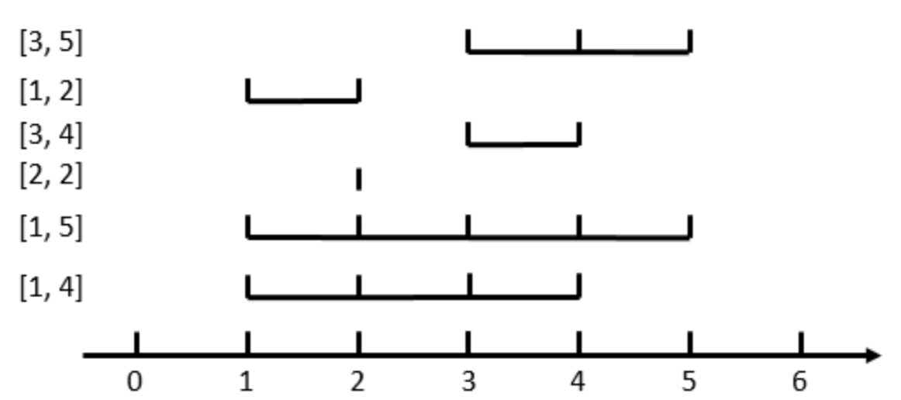
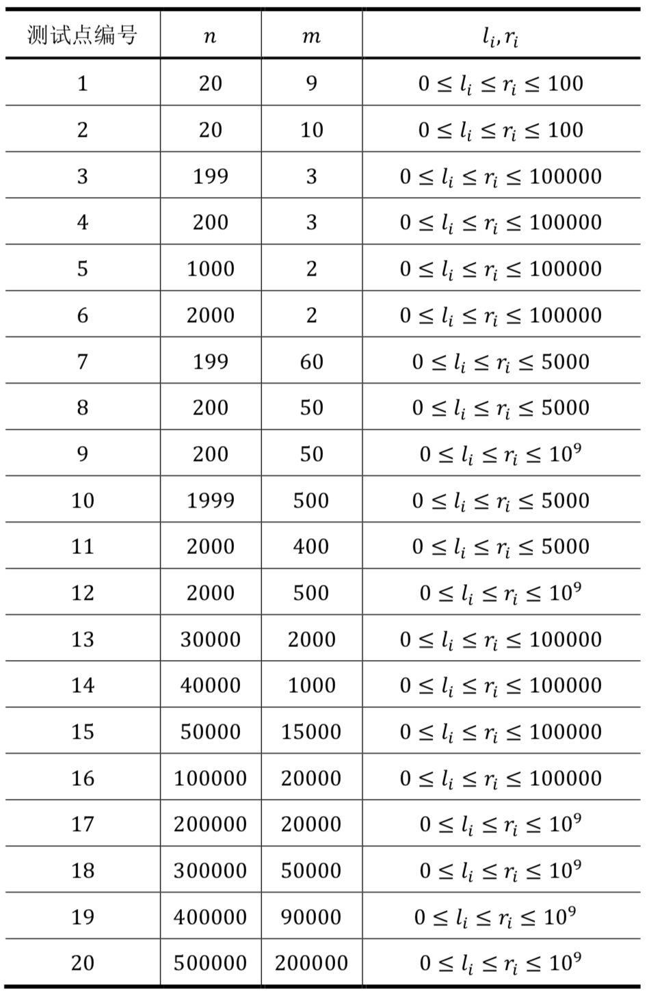

在数轴上有$𝑛$个闭区间$[𝑙_1,𝑟_1],[𝑙_2,𝑟_2],...,[𝑙_n,𝑟_n]$。现在要从中选出$𝑚$个区间，使得这$𝑚$个区间共同包含至少一个位置。换句话说，就是使得存在一个$𝑥$，使得对于每一个被选中的区间$[𝑙_i , 𝑟_i]$，都有$𝑙_i ≤ 𝑥 ≤ 𝑟_i$。
对于一个合法的选取方案，它的花费为被选中的最长区间长度减去被选中的最短区间长度。区间$[𝑙_i , 𝑟_i]$的长度定义为$𝑟_i − 𝑙_i$，即等于它的右端点的值减去左端点的值。
求所有合法方案中最小的花费。如果不存在合法的方案，输出−1。
第一行包含两个正整数$𝑛,𝑚$，用空格隔开，意义如上文所述。保证$1≤𝑚≤𝑛$。
接下来$𝑛$行，每行表示一个区间，包含用空格隔开的两个整数$𝑙_i$和$𝑟_i$，为该区间的左右端点。
只有一行，包含一个正整数，即最小花费。
6 3 3 5 1 2 3 4 2 2 1 5 1 4
2
【样例说明】

如图，当𝑛 = 6, 𝑚 = 3时，花费最小的方案是选取[3,5]、[3,4]、[1,4]这三个区间，他们共同包含了4这个位置，所以是合法的。其中最长的区间是[1,4]，最短的区间是[3,4]，所以它的花费是(4 − 1) − (4 − 3) = 2。
【子任务】
所有测试数据的范围和特点如下表所示：

 Comet OJ
Comet OJ